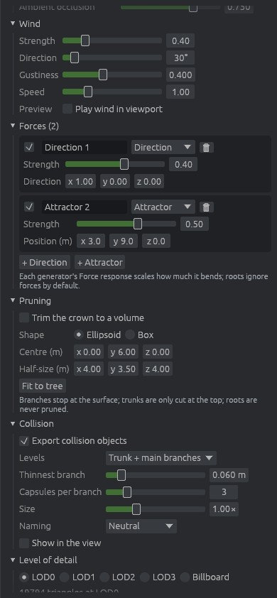
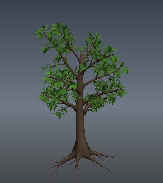
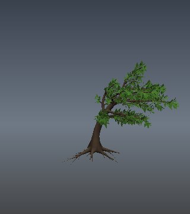
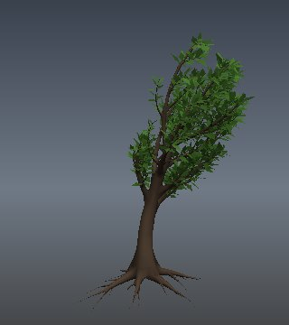
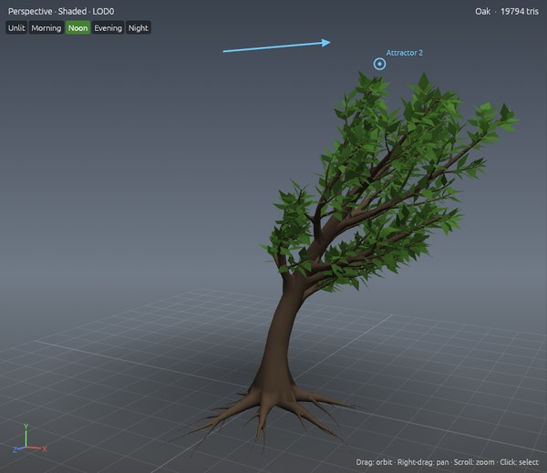
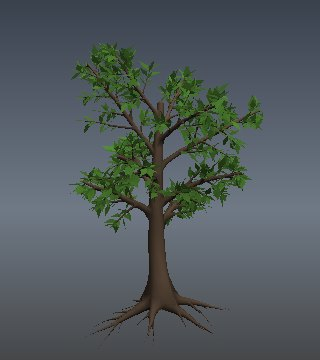
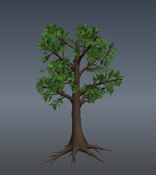
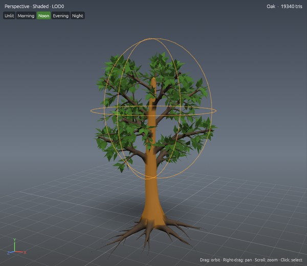
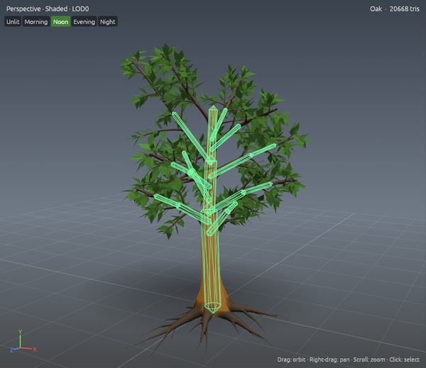

Forces, pruning and collision
Forces bend the whole tree while it grows, pruning trims it to a volume, and collision objects give game physics a simple shape of the trunk and main branches. All three are in the Tree section of the Properties panel, below the wind settings.

Forces
A force bends every stem as it grows, in addition to gravity. Use forces for wind-swept trees on a coast, trees leaning out of a forest edge, or trees growing towards a light source.
- Open the Forces section and click + Direction or + Attractor.
- Adjust the force's Strength and its Direction or Position (m). You can rename a force in its name field.
- To see forces in the viewport, choose View › Forces and pruning helpers (on by default).
- Direction
- Pushes every stem along a direction given as x, y and z. A direction of (1, 0, 0) leans the tree towards +X.
- Attractor
- Pulls stems towards a point, given as a position in metres. A negative strength pushes them away from it.
- Strength
- How strongly the force bends the stems, from −2 to 2. Negative values reverse the force.
Each force can be switched off with its check box and removed with the bin button. Each generator's Force response scales how much it follows the forces; roots ignore them by default.




Pruning
Pruning trims the tree to a box or an ellipsoid: topiary, hedges, or a tree that has to fit under a roof or between buildings.
- Trim the crown to a volume
- Switches pruning on.
- Shape
- Ellipsoid or Box.
- Centre (m) and Half-size (m)
- The position of the volume's centre and its extent from the centre along x, y and z.
- Fit to tree
- Places the volume just inside the current crown, as a starting point.
Branches and leaves stop at the surface of the volume. Trunks are only cut where they leave the top of the volume, and roots are never pruned.



Collision objects
Game physics works best with a few simple shapes instead of the full tree mesh. ArborStudio fits capsules to the trunk and the thick branches and exports them as convex hulls with the tree.
- Export collision objects
- Adds the collision objects to exports.
- Levels
- Which stems get capsules: Trunk only, Trunk + main branches or 3 levels.
- Thinnest branch 0 to 0.5 m
- Branches thinner than this radius get no capsules.
- Capsules per branch 1 to 12
- How many capsules follow each stem. More capsules follow bends more closely.
- Size 0.2× to 3×
- Scales the radius of the capsules.
- Naming
- How the collision meshes are named in exports, so your engine recognises them:
- Neutral:
<Tree>_Collision_01,_02and so on. - Unreal (UCX_):
UCX_<mesh>_01, the prefix Unreal uses for custom collision. - Godot (-convcolonly): the suffix that makes Godot create collision shapes from the meshes on import.
- Neutral:
- Show in the view
- Draws the capsules in the viewport.

GLB exports also store the capsule data (end points and radius) in the node extras, and JSON exports list it, for engines that create capsule colliders directly.